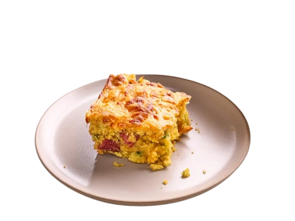

Odin Recipes
Corndog
A corndog is made by dipping skewered hot dogs into a thick cornbread batter made from cornmeal, flour, baking powder, eggs, milk, and a pinch of sugar, then deep-frying them until golden and crispy. The result is a savory and slightly sweet snack with a crunchy outer layer and juicy hot dog inside
